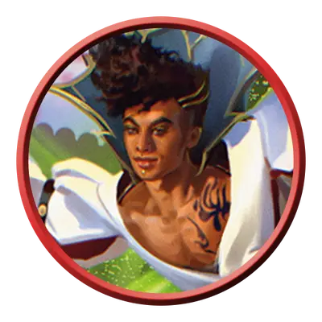

Виртуозный артист
Performer Maestro
Средний или Маленький Гуманоид, Нейтральный

Класс Защиты 18 Инициатива +7 (17)
Хиты 110 (17к8 + 34)
Скорость 30 футов
| мод | спас | ||
|---|---|---|---|
| СИЛ | 12 | +1 | +1 |
| ЛОВ | 18 | +4 | +7 |
| ТЕЛ | 14 | +2 | +2 |
| мод | спас | ||
|---|---|---|---|
| ИНТ | 13 | +1 | +1 |
| МДР | 14 | +2 | +2 |
| ХАР | 19 | +4 | +7 |
Чувства пассивное Восприятие 15
Языки Общий
Опасность 6 (2 300 опыта; БВ +3)
Действия
Мультиатака. Артист совершает три атаки Рапирой.
Рапира. Бросок рукопашной атаки: +7, досягаемость 5 фт. Попадание: 8 (1к8 + 4) Колющего урона плюс 7 (2к6) Психического урона.
Чарующая мелодия. Спасбросок Мудрости: Сл 15, каждое существо в 20-футовой Сфере с центром в точке в 120 футах. Провал: 20 (3к10 + 4) Психического урона, и цель становится Очарованной до конца следующего хода артиста. Успех: Только половина урона.
Сотворение заклинаний. Артист сотворяет одно из следующих заклинаний, не нуждаясь в Материальных компонентах (заклинательная характеристика — Харизма, Сл спасброска заклинаний 15):
Неограниченно: Малая иллюзия, Фокусы
1/день: Жуткий смех Таши, версия 3-го уровня
Бонус мастерства +3
Среда обитания Любая
Сокровища Личные, Инструментальные
Артисты
Художники и актёры
Повсюду, будь то величественные залы дворцов или скромные рыночные площади, искусные мастера сцены оттачивают свои таланты и дарят публике незабываемые впечатления. Одни странствуют по свету, делятся историями и демонстрируют таинственные искусства. Другие служат при дворах или выступают в театрах великих держав, где добиваются признания великих и исполняют прихоти своих покровителей. Многие артисты владеют профессиональными секретами и магическими приёмами, с помощью которых превращают свои выступления в незабываемое шоу.
Воспользуйтесь следующим списком профессий и ролей, чтобы представить образы артистов в ваших приключениях.
| Акробат | Каскадёр | Сценический боец |
| Актёр | Комик | Танцор |
| Артист бурлеска | Кукловод | Укротитель животных |
| Атлет | Менестрель | Уличный музыкант |
| Борец | Мим | Устный историк |
| Воздушный гимнаст | Певец | Фокусник |
| Глашатай | Плакальщик | Хоомейжи |
| Гуттаперча | Поэт | Циркач |
| Джигит | Рассказчик | Шут |
| Жонглёр | Ритуалист |
Виртуозные артисты — выдающиеся исполнители, снискавшие себе громкую славу. Среди них — ведущие актёры театров, отчаянные каскадёры и придворные шуты, умеющие усмирять нравы капризных вельмож. Некоторые из них охотно делятся мастерством с учениками, другие же ревностно хранят свои секреты.